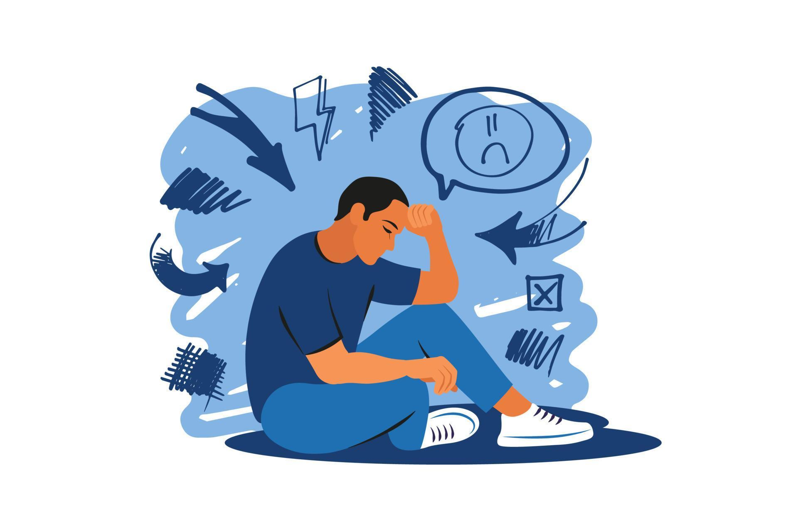

Как работать с эмоциями в стрессе
Видеоролик
Потоковое видео доступно на исходном сервисе. Видеофайл и стенограмма не получены штатным способом.

Источник и ограничения. Статическое содержание не проверяет ответы и не воспроизводит видео.
Здравствуйте, меня зовут Илья Степанов. Я эксперт в области чтения эмоций, влияния и проведения переговоров, сертифицированный профайлер и полиграфолог. Я создал авторскую модель оперативной психодиагностики, на основе которой сегодня работают ведущие специалисты России и стран СНГ.
Как работать с эмоциями в стрессе
Когда человек говорит, что не любит негативные эмоции, он обычно хочет не разобраться в них, а поскорее от них избавиться. Но такой подход только усиливает стресс. Эмоции не делятся на хорошие и плохие. Каждая эмоция выполняет свою задачу и подает сигнал о том, что человек воспринимает ситуацию определенным образом.
Гнев показывает угрозу и подталкивает к защите. Страх предупреждает об опасности и толкает к бегству. Печаль замедляет, останавливает и возвращает к восстановлению. Удивление показывает разрыв привычного шаблона. Отвращение помогает дистанцироваться от того, что человек воспринимает как неприемлемое. Презрение меняет ролевую дистанцию и показывает сравнение, в котором один ставит себя выше другого.
Сами по себе эмоции не вредят человеку. Вред возникает тогда, когда человек запрещает себе их проживать, накапливает напряжение и удерживает телесную реакцию внутри. Тогда краткая адаптивная реакция превращается в долгий стресс.
Почему эмоция может стать проблемой
Живое существо быстро реагирует на угрозу и быстро сбрасывает напряжение. Человек часто делает иначе. Он чувствует раздражение, страх или обиду, но не выражает их, а начинает терпеть, объяснять, оправдывать, подавлять, пережевывать внутри. В этот момент стресс не заканчивается. Он закрепляется.
Именно поэтому важно различать два уровня. На уровне природы эмоция помогает адаптироваться. На уровне человеческой интерпретации эта же эмоция может превратиться в источник долгого напряжения. Человек делает эмоцию проблемой не потому, что она появилась, а потому, что запрещает себе ее прожить и застревает в ней.
Что усиливает стресс
Стресс усиливает не только само событие, но и то, как человек его интерпретирует. Сначала мозг сравнивает ситуацию с прошлым опытом. Затем он пытается предсказать исход. Если человек ожидает угрозу, тело запускает стрессовую реакцию еще до того, как что-то реально произошло.
Например, человек думает о разговоре с руководителем и заранее представляет отказ, конфликт или унижение. Ситуация еще не наступила, а тело уже реагирует так, как будто опасность пришла. Значит, часть стресса человек создает не внешними обстоятельствами, а собственной трактовкой будущего.
Поэтому работать с эмоциями нужно в два шага. Сначала снять телесное напряжение. Затем разбирать мысли, оценки и сценарии.
Проверьте, различаете ли вы действия, которые правда уменьшают стресс, и действия, которые выглядят разумно, но на деле его закрепляют.
Что усиливает стресс
Сохранённая группировка карточек:
скорее снижает стресс
- сначала быстро пройтись или подвигаться, а потом письменно разобрать, что именно пугает
- после всплеска эмоций задать себе вопрос, какой сценарий я уже придумал
- безопасно вывести напряжение в движение, дыхание или голос, а не оставлять его внутри
скорее закрепляет стресс
- перед сложным разговором мысленно несколько раз прокрутить самый плохой исход
- заметить раздражение, но уговаривать себя, что «нормальный человек не должен так реагировать»
- пытаться сразу логически объяснить себе, почему переживать глупо


Источник и ограничения. Статическое содержание не проверяет ответы и не воспроизводит видео.
Что делать в моменте
Если эмоция уже захватила тело, не начинайте с анализа. В этот момент мышление работает хуже, внимание сужается, а человек видит только одну версию происходящего. Сначала нужно сбросить лишнее напряжение через тело. И только потом переходить к мыслям.
Здесь работают три способа эмоциональной разрядки.
Первый способ — физическая разрядка
Интенсивная мышечная работа быстро снимает нервное и эмоциональное напряжение. Для этого подходят спорт, быстрая ходьба, уборка, работа руками, короткая силовая нагрузка, растяжка, активное движение. Смысл прост: тело уже получило сигнал мобилизации, и ему нужно куда-то направить эту энергию.
Если человек не дает телу двигаться, напряжение остается внутри. Поэтому в моменте полезно не сидеть неподвижно, а пройтись, подвигаться, расправить плечи, сменить позу, напрячь и расслабить мышцы.
Второй способ — психоэмоциональная разрядка
Этот способ помогает снизить напряжение через дыхание, звук, слезы, голос, внимание и осознанное усиление безопасного выражения эмоции.
Самый простой вариант — дыхание. Например, можно делать вдох на четыре счета и выдох на шесть. Такой ритм переключает внимание с раздражающей мысли на телесный процесс и постепенно снижает интенсивность аффекта.
Второй вариант — безопасно дать эмоции выход. Если человек сдерживает слезы, он может усилить контакт с печалью через музыку, воспоминание, паузу, одиночество и дать себе выплакаться. Если он сдерживает гнев, он может не срываться на других, а вывести напряжение в голос, движение, резкий шаг, удар по подушке, работу с боксерской грушей, активную ходьбу. Важно не направлять эмоцию на человека, а переводить ее в безопасное действие.
Иногда достаточно заметить, что делает тело в эмоции, и сознательно завершить этот жест. В гневе тело напрягается, речь становится резче, движения ускоряются. В печали тело сжимается и замедляется. Если человек осознает этот рисунок, он может помочь телу завершить реакцию и не оставлять ее внутри.
Третий способ — интимная разрядка
Иногда напряжение помогает снять сексуальная близость или другая безопасная форма психосексуальной разрядки. Этот способ работает только тогда, когда он уместен, доброволен и не подменяет собой регулярную работу со стрессом. Его нельзя считать универсальным решением, но он тоже может снижать накопленное напряжение.
Что делать после разрядки
После того как тело немного сбросило напряжение, можно переходить к мыслям. Только в этот момент человек начинает видеть ситуацию шире и перестает воспринимать ее как единственно возможную катастрофу.
Полезно задать себе несколько вопросов:
- Что сейчас со мной происходит?
- Что именно я воспринимаю как угрозу?
- Какой сценарий я уже придумал?
- Какие еще варианты возможны?
- Что я могу сделать прямо сейчас?
Лучше отвечать письменно. Бумага помогает вынести мысль наружу и увидеть, что у ситуации есть не один исход, а несколько.
Почему контекст важнее ярлыка
Эмоция не имеет знака сама по себе. Знак ей задает контекст. Печаль может помочь человеку писать, думать, останавливаться и восстанавливаться. В другой ситуации та же печаль может мешать действовать. Гнев может разрушать отношения, а может помогать защищать границы и выигрывать в спорте. Радость может поддерживать контакт, а может выглядеть неуместно, если ситуация требует сочувствия и сдержанности.
Поэтому важно не спрашивать, хорошая это эмоция или плохая. Важно спрашивать, что она делает в конкретной ситуации: помогает или мешает.
Почему не стоит жить в режиме постоянного преодоления
Многие люди воспринимают напряжение как норму и считают, что сильный человек должен постоянно преодолевать, терпеть и вытягивать ситуацию на себе. Но такой подход превращает краткий стресс в хронический. Если человек каждый день тушит пожары, сдерживает эмоции и откладывает разрядку на потом, он постепенно переводит организм в режим фоновой перегрузки.
Гораздо полезнее действовать как стратег: не доводить ситуацию до надрыва, а заранее замечать, где накапливается напряжение, и вовремя его снимать. Этот принцип работает и в бизнесе, и в общении, и в личной жизни.
Что важно делать регулярно
Не копите напряжение. Не переносите его домой в надежде, что потом как-нибудь само пройдет. Если стресс уже возник, снимайте его в моменте через тело: движение, дыхание, голос, безопасную разрядку, смену позы, краткую физическую активность.
Затем анализируйте мысли. Спрашивайте не только «почему я так реагирую», но и «зачем я сейчас это состояние удерживаю». Такой вопрос помогает увидеть не причину в прошлом, а текущую функцию эмоции.
Домашнее задание
Проанализируйте прошлую неделю и составьте два списка.
В первый список внесите 10 простых действий, которые забирают у вас энергию.
Во второй список внесите 20 простых действий, которые дают вам энергию.
Фиксируйте именно действия через простые глаголы: позвонить, пройтись, посмотреть, почитать, помолчать, встретиться, послушать, записать, убрать, поехать. Не используйте слишком общие формулировки вроде «отдохнуть» или «восстановиться». Чем точнее действие, тем полезнее список.
Когда вы увидите эти два перечня, вам станет проще управлять своим состоянием не в теории, а в ежедневной практике.
Эмоции не вредят человеку сами по себе. Человеку вредит привычка подавлять их, копить напряжение и оставаться в нем слишком долго. Чтобы работать с эмоциями в стрессе, действуйте в такой последовательности:
- сначала снимите телесное напряжение;
- затем разберите мысли и интерпретации;
- после этого ищите решение.
Не делите эмоции на хорошие и плохие. Смотрите на их функцию, контекст и последствия. Тогда эмоция перестанет быть врагом и станет сигналом, с которым можно работать.
Теперь проверьте, уловили ли вы главный практический принцип урока: эмоцию важно оценивать не по ярлыку, а по функции и контексту.